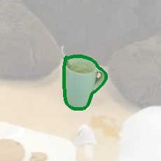
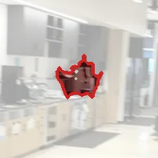
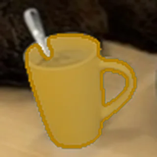
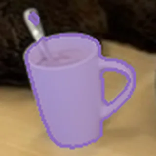
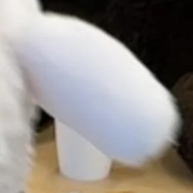
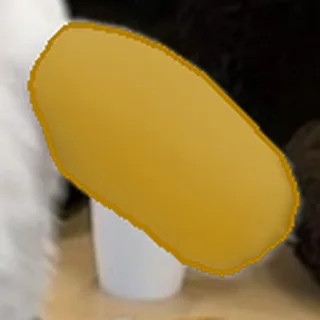
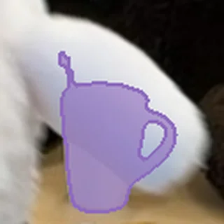
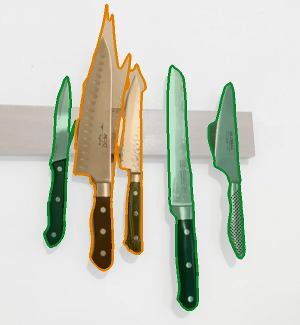
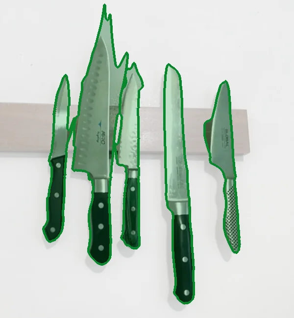

NeurIPS 2026
MSR-3DMulti-Mode Semantic Representation for Open-Vocabulary 3D Scene Understanding
- 1National Key Laboratory of Maritime Unmanned Swarm Intelligence, Shanghai University
- 2Shanghai University
- 3Tsinghua University
- * Corresponding author
Don't average an object's views into one feature. Keep one prototype per appearance mode, and learn to match queries against all of them.
01Try it
Ask a 3D scene
Pick a text query. MSR-3D lights up the 3D objects it selects and dims everything else. These are the released model’s answers on the benchmark, misses included; the number on each query is its IoU (%) with the annotation.
Scenes are 3D Gaussian Splatting reconstructions (LERF-OVS figurines and ramen, 3D-OVS room), trimmed for the web and rendered in your browser with Spark and three.js. Without WebGL a recorded orbit is shown instead.
02Overview
The paper in under five minutes
03The problem
One feature lets wrong objects in
To answer a text query, existing methods compress all views of a 3D object into one feature and compare it with the query. Related but wrong objects can score high enough to get through.
Existing methodreturns 2 objects


MSR-3Dreturns 1 object

Existing method shown: OpenSplat3D, the strongest method we compared against. Each tile is the same frame, zoomed on one returned object.
A single similarity score cannot tell a related object from the right one.
04The idea
One prototype per appearance mode
Across its 127 views the cup looks quite different: from the side, from above, half hidden. Averaging their features mixes these modes together, so none of them is represented well.
Keep the modes apart instead of averaging them.
05How it works
From 3D objects to a confident answer
MSR-3D starts from a reconstructed scene that is already split into 3D objects, and decides which of them a text query refers to.
Input
A scene of 3D object candidates
A 3D Gaussian Splatting reconstruction, segmented into object instances. Here they are lifted apart and coloured; every one is a candidate answer.
Step 1
Look at every view through two masks
Each view of an object is encoded twice: inside the 2D segmentation mask and inside the rendered 3D mask. They fail differently: when a toy blocks the cup, the 2D mask follows the toy while the render still outlines the cup (bottom row).





Step 2
Compress the views into a few prototypes
The cup's 249 view features become 10 prototypes: their mean, the views that each add a new appearance, and a few far-off views. Each prototype also keeps simple attributes, such as how much support it has.
Step 3
Learn how to match a query
A small learned matcher reads the query's similarity to every prototype, together with the attributes, and decides to keep or drop each object. One pattern of high similarity is not enough to get in.
Trained once on the 18 queries of a single scene, then reused unchanged on every other scene.
06Results
Better answers on both benchmarks
Scene-averaged mIoU gain over the strongest compared method on each query set. All methods run on the same 3D reconstruction and object candidates.
+6.69
LERF-OVS
all 67 queries
64.70 vs 58.01 mIoU
+3.46
LERF-OVS
45 query strings unseen in training
63.15 vs 59.69 mIoU
+1.57
3DOVS
61 queries, 10 scenes
80.98 vs 79.41 mIoU
| Method | LERF-OVS · Full | LERF-OVS · Unseen | 3DOVS | ||||||
|---|---|---|---|---|---|---|---|---|---|
| mIoU | mAcc | mF1 | mIoU | mAcc | mF1 | mIoU | mAcc | mF1 | |
| OpenGaussian⋆ | 55.08 | 75.20 | 62.82 | 57.83 | 76.20 | 64.67 | 73.14 | 85.48 | 77.11 |
| Dr.Splat⋆ | 48.79 | 71.63 | 54.58 | 51.13 | 71.41 | 59.80 | 75.40 | 86.90 | 76.84 |
| LAGA⋆ | 54.74 | 73.61 | 62.02 | 57.91 | 78.21 | 65.63 | 75.56 | 88.57 | 77.52 |
| OpenInsGaussian⋆ | 54.63 | 74.01 | 61.25 | 56.57 | 74.53 | 63.10 | 73.85 | 87.14 | 78.28 |
| Segment-then-Splat† | 50.74 | 64.88 | 58.93 | 56.29 | 71.75 | 66.19 | 76.12 | 90.48 | 81.11 |
| CAGS⋆ | 55.01 | 72.82 | 61.19 | 56.57 | 74.53 | 63.10 | 73.93 | 87.14 | 78.00 |
| VALA | 54.38 | 75.79 | 52.92 | 56.96 | 77.31 | 59.55 | 76.39 | 88.57 | 79.10 |
| OpenSplat3D | 58.01 | 75.20 | 61.07 | 59.69 | 76.20 | 65.68 | 79.41 | 93.33 | 80.52 |
| MSR-3D (ours) | 64.70 | 85.52 | 72.63 | 63.15 | 83.21 | 72.83 | 80.98 | 95.00 | 83.02 |
Bold best, underlined second best. † single-select evaluation. ⋆ locally tuned variant beyond the method's native scoring or selection rule. Every method uses the same OpenSplat3D reconstruction and instance segmentation. Full: all 67 LERF-OVS queries, including the scene used for training; Unseen: the 45 queries whose strings never appear in training.
07Where the gain comes from
Bigger gains on imperfect candidates
Queries grouped by how good the best available 3D candidate is, before any matching. When no candidate fits the object well, choosing well matters most.
MSR-3DOpenSplat3D (direct matching)
Bins are defined before selection: for each query, we take the highest historical annotation IoU between the queried object and any positive 3D candidate. Bars show the final 2D response-mask IoU vs. ground truth after each method selects instances (union if it selects multiple). These are different measures; final IoU need not fall within or be capped by its bin.
Not shown: 2 LERF-OVS queries with no matching candidate at all (1.86 vs 0.92). On 3DOVS most queries (47 of 61) already have a near-perfect candidate, which is why its overall gain is smaller.
MSR-3D makes better use of imperfect candidates.
08More examples
Many objects, one query
Some queries have several answers. For “knife” in the kitchen scene there are six knives.


Green: found. Orange: missed. One knife is not visible in this frame; the existing method's four wrong picks lie outside it.
09Resources
Code, weights and data
Abstract
3D Gaussian Splatting (3DGS)-based open-vocabulary 3D scene understanding requires identifying reconstructed 3D instances that correspond to a natural-language query. Existing methods typically compress multi-view observations of an instance into a single semantic descriptor, which is insufficient to represent a complete 3D instance. To retain rich semantic information across diverse viewpoints, we propose MSR-3D, a framework built around a Multi-Mode Semantic Representation. Specifically, MSR-3D derives multi-view observations from both 2D segmentation masks and rendered masks of each segmented 3D instance. These observations are organized into groups. Each group is summarized as a semantic mode through a representative feature and associated statistical attributes. Based on the multi-mode semantic representation, we further introduce a lightweight learnable mode-aware matcher for querying. The matcher combines linear scoring with a nonlinear attention-based branch to integrate evidence from valid semantic modes into a three-dimensional score vector for each query–instance pair. Calibrated decision boundaries are then learned in the resulting score space to separate true query–instance matches from semantically related distractors. This structured and decomposable design further improves the interpretability and generalization of MSR-3D. Experiments on open-vocabulary scene-understanding benchmarks show that MSR-3D improves scene-averaged mIoU on LERF-OVS by 6.69 percentage points over the strongest compared baseline and achieves the best overall performance on 3DOVS.
BibTeX
@inproceedings{fu2026msr3d,
title = {{MSR-3D}: Multi-Mode Semantic Representation for
Open-Vocabulary 3D Scene Understanding},
author = {Jianan Fu and Ting Wu and Rui Yang and Jiacheng Sun and
Xinghong Zhou and Chenghai Mao and Pan Jiaxiang and Xiaomao Li},
booktitle = {Advances in Neural Information Processing Systems},
year = {2026}
}